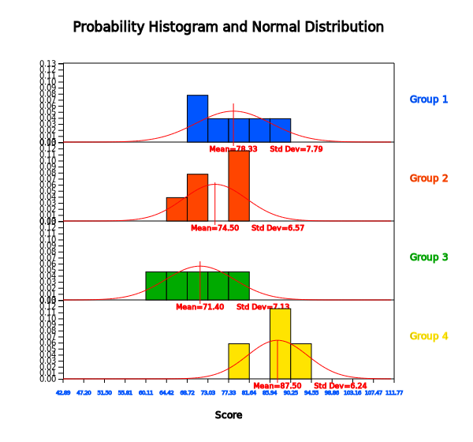
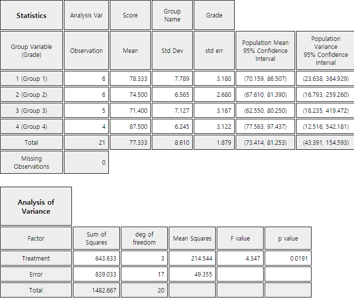
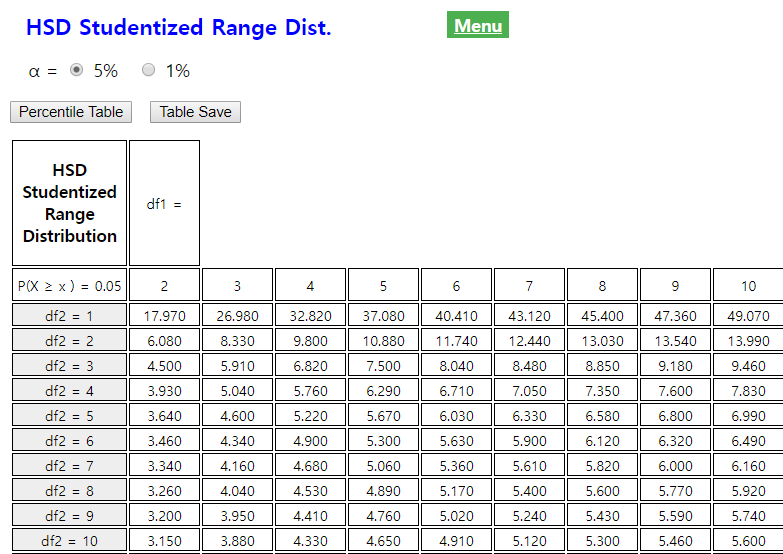
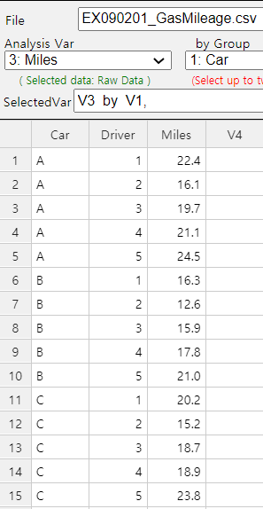
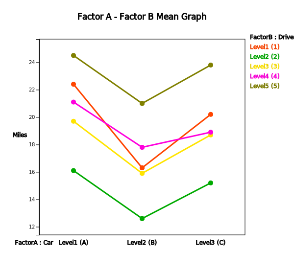
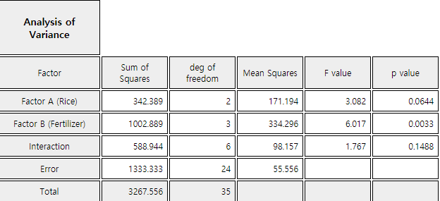

In testing hypothesis of the population mean described in chapters 7 and 8, the number of populations was one or two. However, many cases are encountered where there are three or more population means to compare.
The analysis of variance (ANOVA) is used to test whether several population means are equal or not. The ANOVA was first published by British statistician R. A. Fisher as a test method applied to the study of agriculture, but today its principles are applied in many experimental sciences, including economics, business administration, psychology and medicine.
In section 9.1, the one-way ANOVA for single factor is introduced. In section 9.2, experimental designs for experiments are introduced. In section 9.2, the two-way ANOVA for two factors experiments is introduced.
9.1 Analysis of Variance for Single Factor Experiments
In section 8.1, we discussed how to compare means of two populations using the testing hypothesis. This chapter
discusses how to compare means of several populations. There are many examples of comparing means of several
populations as follows:
- Are average hours of library usage for each grade the same?
- Are yields of three different rice seeds equal?
- In a chemical reaction, are response rates the same at four different temperatures?
- Are average monthly wages of college graduates the same at three different cities?
The group variable used to distinguish groups of the population, such as the grade or the rice, is called a factor.
Factor
The group variable used to distinguish groups of the population is called a factor.
This section describes the one-way analysis of variance (ANOVA) which compares population means when there is a
single factor. Section 9.2 describes how the experiment is designed to extract sample data. Section 9.3 describes
the two-way ANOVA to compare several population means when there are two factors. Let's take a look at the
following example.
Example 9.1.1
In order to compare the English proficiency of each grade at a university, samples were randomly selected from
each grade to take the same English test, and data are as in Table 9.1.1. The last row is a calculation of
the average \({\overline y}_{1\cdot}\), \({\overline y}_{2\cdot}\), \({\overline y}_{3\cdot}\), \({\overline y}_{4\cdot}\) for each grade.
Table 9.1.1 English Proficiency Score by Grade
Socre
Student 1
Student 2
Student 3
Student 4
Student 5
Student 6
Student Average
Grade 1
81
75
69
90
72
83
\({\overline y}_{1\cdot}\)=78.3
Grade 2
65
80
73
79
81
69
\({\overline y}_{2\cdot}\)=74.5
Grade 3
72
67
62
76
80
\({\overline y}_{3\cdot}\)=71.4
Grade 4
89
94
79
88
\({\overline y}_{4\cdot}\)=87.5
[Ex] ⇨ eBook ⇨ EX090101_EnglishScoreByGrade.csv.
1) Using 『eStat』, draw a dot graph of test scores for each grade and compare their averages.
2) We want to test a hypothesis whether average scores of each grade are the same or not. Set up a null
hypothesis and an alternative hypothesis.
3) Apply the one-way analysis of variances to test the hypothesis in question 2).
4) Use 『eStat』 to check the result of the ANOVA test.
Answer
1) If you draw a dot graph of English scores by each grade, you can see whether scores of each grade are similar.
If you plot the 95% confidence interval of the population mean studied in Chapter 6 on each dot graph, you can
see a more detailed comparison.
In order to draw a dot graph with data shown in Table 9.1.1 using 『eStat』 , enter data on the sheet
and set variable names to 'Grade' and 'Score' as shown in <Figure 9.1.1>. In the variable selection box
which appears by clicking the ANOVA icon on the main menu of 『eStat』, select 'Analysis Var' as ‘Score’
and 'By Group' as ‘Grade’. The dot graph of English scores by each grade and the 95% confidence interval are displayed as shown in <Figure 9.1.2>.
<Figure 9.1.1> 『eStat』 data input for ANOVA
<Figure 9.1.2> 95% Confidence Interval by grade
To review the normality of the data, pressing the [Histogram] button under this graph (<Figure 9.1.3>) will
draw the histogram and normal distribution together, as shown in <Figure 9.1.4>.
<Figure 9.1.3> Options of ANOVA

<Figure 9.1.4> Histogram of English score by grade
<Figure 9.1.2> shows sample means as \({\overline y}_{1\cdot}\)= 78.3,
\({\overline y}_{2\cdot}\) = 74.5, \({\overline y}_{3\cdot}\) = 71.4,
\({\overline y}_{4\cdot}\) = 87.5. The sample mean of the 4th grade is
relatively larger than the other grades and \({\overline y}_{2\cdot}\) and \({\overline y}_{3\cdot}\) are similar.
Therefore, it can be expected that the population mean
\(\mu_{2}\) and \(\mu_{3}\) would be the same and \(\mu_{4}\) will differ from three other population means.
However, we need to test whether these differences of sample
means are statistically significant.
2) In this example, the null hypothesis to test is that population means of English scores of the four grades
are all the same, and the alternative hypothesis is that population means of the English scores are not the same.
In other words, if \(\mu_1 , \mu_2 , \mu_3 ,\) and \(\mu_4\) are the population means of English scores
for each grade, the hypothesis to test can be written as follows,
Alternative hypothesis \( \quad \small H_1\): at least one pair of \(\mu_i\) is not the same
3) A measure that can be considered first as a basis for testing differences in multiple sample means would be
the distance from each mean to the overall mean. In other words, if the overall sample mean for all 21 students
is expressed as \(\overline y_{\cdot \cdot}\), the squared distance from each sample mean to the overall mean is as follows when the number of samples
in each grade is weighted. This squared distance is called the between sum of squares (SSB) or the treatment sum of squares (SSTr).
If the squared distance \(\small SSTr\) is close to zero, all sample means of English scores for four grades are similar.
However, this treatment sum of squares can be larger if the number of populations increases.
It requires modification to become a test statistic to determine whether several population means are equal.
The squared distance from each observation to its sample mean of the grade is called the within sum of squares (SSW) or
the error sum of squares (SSE) as defined below.
If population distributions of English scores in each grade follow normal distributions and their variances are
the same, the following test statistic has the \(F_{3, 17}\) distribution.
This statistic can be used to test whether population English scores of four grades are the same or not. In
the test statistic, the numerator \(\frac{SSTr}{4-1}\) is called the treatment mean square (MSTr) which implies a variance between
grade means. The denominator \(\frac{SSE}{21-4}\) is called the error mean square (MSE) which implies a variance within each grade.
Thus, the above test statistics are based on the ratio of two variances which is why the test of multiple
population means is called an analysis of variance (ANOVA).
Calculated test statistic which is the observed \(\small F\) value, \(\small F_{0}\) , using data of English scores for each grade is as follows.
Since \(\small F_{3,17; 0.05}\) = 3.20, the null hypothesis that population means of English scores of each grade are the same,
\(\small H_0 : \mu_1 = \mu_2 = \mu_3 = \mu_4 \) , is rejected at the 5% significance level.
In other words, there is a difference in population means of English scores of each grade.
The following ANOVA table provides a single view of the above calculation.
Factor
Sum of Squares
Degree of freedom
Mean Squares
F ratio
Treatment
SSTr = 643.633
4-1
MSTr = \(\frac{643.633}{3}\)
\(F_0 = 4.347\)
Error
SSE = 839.033
21-4
MSE = \(\frac{839.033}{17}\)
Total
SST = 1482.666
20
4) In <Figure 9.1.3>, if you select the significance level of 5%, confidence level of 95%,
and click [ANOVA F test] button, a graph showing the location of the test statistic in the F distribution
is appeared as shown in <Figure 9.1.5>. Also, in the Log Area, the mean and confidence interval tables
and test result for each grade are appeared as in <Figure 9.1.6>.
<Figure 9.1.5> 『eStat』 ANOVA F test

<Figure 9.1.6> 『eStat』 Basic Statistics and ANOVA table
The analysis of variance is also possible using 『eStatU』. Entering the data as in <Figure 9.1.7>
and clicking the [Execute] button will have the same result as in <Figure 9.1.5>.
[Testing Hypothesis : 3+ Population Means (ANOVA)]
The above example refers to two variables, the English score and grade. The variable such as the English score is
called as an analysis variable or a response variable. The response variable is mostly a continuous variable. The
variable used to distinguish populations such as the grade is called a group variable or a factor variable which
is mostly a categorical variable. Each value of a factor variable is called a level of the factor and the number
of these levels is the number of populations to be compared. In the above example, the factor has four levels,
1st, 2nd, 3rd and 4th grade. The term 'response' or 'factor' is originated to analyze data through experiments
in engineering, agriculture, medicine and pharmacy.
The analysis of variance method that examines the effect of single factor on the response variable is called the
one-way ANOVA. Table 9.1.2 shows the typical data structure of the one-way ANOVA when the number of levels of a
factor is \(k\) and the numbers of observation at each level are \(n_1 , n_2 , ... , n_k\).
Table 9.1.2 Notation of the one-way ANOVA
Factor
Observed values of sample
Average
Level 1
\(Y_{11} \; Y_{12}\; \cdots \;Y_{1n_1} \)
\(\overline Y_{1\cdot}\)
Level 2
\(Y_{21} \; Y_{22}\; \cdots \;Y_{2n_2} \)
\(\overline Y_{2\cdot}\)
\(\cdots\)
\(\cdots\)
\(\cdots\)
Level k
\(Y_{k1} \; Y_{k2}\; \cdots \;Y_{kn_k} \)
\(\overline Y_{k\cdot}\)
Statistical model for the one-way analysis of variance is given as follows:
$$
\begin{align}
Y_{ij} &= \mu_i + \epsilon_{ij} \\
&= \mu + \alpha_i + \epsilon_{ij}, \;i=1,2,...,k; \;j=1,2,..., n_i \\
\end{align}
$$
\(Y_{ij}\) represents the \(j^{th}\) observed value of the response variable for the \(i^{th}\) level of factor.
The population mean of the \(i^{th}\) level, \(\mu_{i}\), is represented as \(\mu + \alpha_{i}\) where \(\mu\)
is the mean of entire population and \(\alpha_{i}\) is the effect of \(i^{th}\) level for the response
variable. \(\epsilon_{ij}\) denotes an error term of the \(j^{th}\) observation
for the \(i^{th}\) level and the all error terms are assumed independent of each other and follow
the same normal distribution with the mean 0 and variance \(\sigma^{2}\).
The error term \(\epsilon_{ij}\) is a random variable in the response variable due to reasons other than levels of the factor.
For example, in the English score example, differences in English performance for each grade can be caused
by other variables besides the variables of grade, such as individual study hours, gender and IQ.
However, by assuming that these variations are relatively small compared to variations due to differences in grade, the
error term can be interpreted as the sum of these various reasons.
The hypothesis to test can be represented using \(\alpha_{i}\) instead of \(\mu_{i}\) as follows:
Alternative hypothesis \( \quad H_1\): at least one \(\alpha_i\) is not equal to 0
In order to test the hypothesis, the analysis of variance table as Table 9.1.3 is used.
Table 9.1.3 Analysis of variance table of the one-way ANOVA
Factor
Sum of Squares
Degree of freedom
Mean Squares
F ratio
Treatment
SSTr
\(k-1\)
MSTr=\(\frac{SSTr}{k-1}\)
\(F_0 = \frac{MSTr}{MSE}\)
Error
SSE
\(n-k\)
MSE=\(\frac{SSE}{n-k}\)
Total
SST
\(n-1\)
\(\qquad n = \sum_{i=1}^{n} \; n_i\)
The three sum of squares for the analysis of variances can be described as follows: For an explanation, first define
the following statistics:
\({\overline Y}_{i \cdot} \; \) Mean of observations at the \(i^{th}\) level
\({\overline Y}_{\cdot \cdot} \; \) Mean of total observations
SST = \(\sum_{i=1}^{k} \sum_{j=1}^{n_i} ( Y_{ij} - {\overline Y}_{\cdot \cdot} )^2 \;\) :
The sum of squared distances between observed values of the response variable and the mean of total observations
is called the total sum of squares (SST).
SSTr = \(\sum_{i=1}^{k} \sum_{j=1}^{n_i} ( {\overline Y}_{i \cdot} - {\overline Y}_{\cdot \cdot} )^2 \;\) :
The sum of squared distances between the mean of each level and the mean of total observations is called the
treatment sum of squares (SSTr). It represents the variation between level means.
SSE = \(\sum_{i=1}^{k} \sum_{j=1}^{n_i} ( {Y}_{ij} - {\overline Y}_{i \cdot} )^2 \;\) :
The sum of squared distances between observations of the \(i^{th}\) level and the mean of the \(i^{th}\) level is referred to as
'within variation', and is called the error sum of squares (SSE).
The degree of freedom of each sum of squares is determined by the following logic:
The SST consists of \(n\) number of squares, \(( Y_{ij} - {\overline Y}_{\cdot \cdot} )^2\),
but \( {\overline Y}_{\cdot \cdot} \) should be calculated first, before SST is calculated,
and hence the degree of freedom of SST is \(n-1\). The SSE consists of \(n\) number of squares,
\(( {Y}_{ij} - {\overline Y}_{i \cdot} )^2 \), but the number of values,
\({\overline Y}_{1 \cdot}, {\overline Y}_{2 \cdot}, ... , {\overline Y}_{k \cdot}\)
should be calculated first, before SSE is calculated, and hence the degree of freedom of SSE is \(n-k\).
The degree of freedom of SSTr is calculated as the degree of freedom of SST minus the degree of freedom of SSE which is \(k-1\).
In the one-way analysis of variance, the following facts are always established:
Partition of sum of squares and degrees of freedom
Sum of squares: SST = SSTr + SSE
Degrees of freedom: \((n-1) = (k-1) + (n-k)\)
The sum of squares divided by the corresponding degrees of freedom is referred to as the mean squares and Table
9.1.3 defines the treatment mean squares (MSTr) and error mean squares (MSE). As in the meaning of the sum of
squares, the treatment mean square implies the average variation between each level of the factor, and the error
mean square implies the average variation within observations in each level. Therefore, if MSTr is relatively
much larger than MSE, we can conclude that the population means of each level, \(\mu_i\), are not the same. So by what
criteria can you say it is relatively much larger?
The calculated \(F\) value, \(F_0\), in the last column of the ANOVA table represents the relative size of MSTr and MSE. If
the assumptions of \(\epsilon_{ij}\) based on statistical theory are satisfied, and if the null hypothesis
\(\small H_0 : \alpha_1 = \alpha_2 = \cdots = \alpha_k \) = 0 is true, then the
below test statistic follows a F distribution with degrees of freedoms \(k-1\) and \(n-k\).
$$
F_{0} = \frac { \frac{SSTr}{(k-1)} } { \frac{SSE}{(n-k)} }
$$
Therefore, when the significance level is \(\alpha\) for a test, if the calculated value \(F_0\) is greater
than the value of \(F_{k-1,n-k; α}\), then the null hypothesis is rejected. That is,
it is determined that the population means of each factor level are not all the same.
Decision Rule If \(\;\; F_0 > F_{k-1,n-k; α} \), then reject \(H_0\)
(Note: 『eStat』 calculates the \(p\)-value of this test. Hence if the \(p\)-value is smaller than
the significance level \(\alpha\), then reject the null hypothesis. )
Practice 9.1.1(Plant Growth by Condition)
Results from an experiment to compare yields (as measured by dried weight of plants) obtained under a control
(leveled ‘ctrl’) and two different treatment conditions (leveled ‘trt1’ and ‘trt2’). The weight data with
30 observations on control and two treatments (‘crtl’, ‘trt1’, ‘trt2’), are saved at the following location
of 『eStat』. Answer the followings using 『eStat』 ,
[Ex] ⇨ eBook ⇨ PR090101_Rdatasets_PlantGrowth.csv
1) Draw a dot graph of weights for each control and treatments.
2) Test a hypothesis whether the weights are the same or not. Use the 5% significance level.
If the F test of the one-way ANOVA does not show a significant difference between each level of the factor, it
can be concluded that there is no difference between each level of populations. However, if you conclude that
there are significant differences between each level as shown in [Example 9.1.1], you need to examine which
levels are different from each other.
The analysis of differences between population means after ANOVA requires several tests for the mean difference
to be performed simultaneously and it is called as the multiple comparisons. The hypothesis for the multiple
comparison to test whether the level means, \(\mu_i\) and \(\mu_j\), are equal is as follows:
$$
H_0 : \mu_i = \mu_j , \quad H_1 : \mu_i \ne \mu_j \quad i=1,2,...,k-1,\; j=i+1,i+2,...,k
$$
It means that there are \(_{k}C_{2}\) tests to be done simultaneously for the multiple comparisons
if there are \(k\) levels of the factor.
There are many multiple comparisons tests, but Tukey's Honestly Significant Difference (HSD) test is most commonly
used. The statistic for Tukey's HSD test to compare means \(\mu_i\) and \(\mu_j\) is the sample mean
difference \({\overline y}_{i \cdot} - {\overline y}_{j \cdot}\) and the decision rule to test \(H_0 : \mu_i = \mu_j\) is as follows:
If \(|{\overline y}_{i\cdot} - {\overline y}_{j\cdot} | > HSD_{ij}\), then reject \(H_0\)
where \(HSD_{ij} = q_{k,n-k; α} \cdot \sqrt{\frac{1}{2} ( \frac{1}{n_i } + \frac{1}{n_j} ) MSE }\),
\(n_i\) and \(n_j\) are the number of samples (repetitions) in \(i^{th}\) level and \(j^{th}\) level,
\(MSE\) is the mean squared error, \(q_{k,n-k; α}\) is the right tail 100\(\times \alpha\)
percentile of the studentized range distribution with parameter \(k\) and \(n-k\) degrees of freedom.
(It can be found at 『eStatU』 (<Figure 9.1.8>)).

<Figure 9.1.8> 『eStatU』 HSD percentile table
Example 9.1.2
In [Example 9.1.1], the analysis variance of English scores by the grade concluded that the null hypothesis was
rejected and the average English scores for each grade were not all the same. Now let's apply the multiple
comparisons to check where the differences exist among each school grade with the significance level of 5%. Use
『eStat』 to check the result.
Answer
The hypothesis of the multiple comparisons is \(\small H_0 : \mu_i = \mu_j , \quad H_1 : \mu_i \ne \mu_j\)
and the decision rule is as follows:
Since there are four school grades (\(k=4\)), \(_{4}C_{2}\) = 6 multiple comparisons are possible as follows.
The 5 percentile from the right tail of HSD distribution which is used to test is
\(q_{k,n-k; α} = q_{4,21-4; 0.05}\) = 4.02.
The result of the above multiple comparisons shows that there is a difference between \(\mu_2\) and \(\mu_4\),
\(\mu_3\) and \(\mu_4\) as can be seen in the dot graph with average in <Figure 9.1.1>.
It also shows that \(\mu_1\) has no significant difference from other means.
If you click [Multiple Comparison] in the options of the ANOVA as in <Figure 9.1.3>, 『eStat』 shows
the result of Tukey's multiple comparisons as shown in <Figure 9.1.9>. 『eStat』 also shows the mean
difference and 95% HSD value for the sample mean combination after rearranging levels of rows and columns in
ascending order of the sample means.
The next table shows that, if the HSD test result for the combination of the two levels is significant with
the 5% significance level, then * will be marked and if it is significant with the 1% significance level, then **
will be marked, if it is not significant, then the cell is left blank.
<Figure 9.1.9> HSD Multiple Comarisons
For the analysis of mean differences, confidence intervals for each level may also be used. <Figure
9.1.2> shows the 95% confidence interval for the mean for each level. This confidence interval is created
using the formula described in Chapter 6, but the only difference is that the estimate of the variance for the
error, \(\sigma^2\), is the pooled variance using overall observations rather than the sample variance of observed values at
each level. In the ANOVA table, MSE is the pooled variance.
In post-analysis using these confidence intervals, there is a difference between means if the confidence
intervals are not overlapped, so the same conclusion can be obtained as in the previous HSD test.
Practice 9.1.2
By using the data of [Practice 9.1.1]
[Ex] ⇨ eBook ⇨ PR090101_Rdatasets_PlantGrowth.csv
apply the multiple comparisons to check where differences exist among Control and two treatments with
the significance level of 5%. Use 『eStat』.
9.1.2 Residual Analysis
Another statistical analysis related to the ANOVA is a residual analysis. Various hypothesis tests
in the ANOVA are performed on the condition that assumptions hold about the error term \(\epsilon_{ij}\).
Assumptions about error terms include independence (\(\epsilon_{ij}\) are independent of each other),
homoscedasticity (each variance of \(\epsilon_{ij}\) is constant as \(\sigma^2\)), normality
(each \(\epsilon_{ij}\) is normally distributed), etc. The validity of these assumptions
should always be investigated. However, since \(\epsilon_{ij}\) can not be observed, the residual
as the estimate of \(\epsilon_{ij}\) is used to check the assumptions. The residuals in
the ANOVA are defined as the deviations used in the equation of the error sum of squares, for example,
\(Y_{ij} - {\overline Y}_{i \cdot}\) in the one-way analysis of variance.
Example 9.1.3
In [Example 9.1.1] of English score comparison by the grade, apply the residual analysis using 『eStat』.
Answer
If you click on [Standardized Residual Plot] of the ANOVA option in <Figure 9.1.3>, a scatter plot
of residuals versus fitted values appears as shown in <Figure 9.1.10>. In this scatter plot, if the
residuals show no unusual tendency around zero and appear randomly, then the assumptions of independence and
homoscedasticity are valid. There is no unusual tendency in this scatter plot. Normality of the residuals can be
checked by drawing the histogram of residuals.
<Figure 9.1.10> Residual plot of the ANOVA
Practice 9.1.3
By using the data of [Practice 9.1.1]
Data such as English scores by the grade in [Example 9.1.1] are not so difficult to collect samples from each of
the grade population. However, obtaining samples through experiments such as engineering, medicine, or
agriculture are often difficult to collect a large number of samples due to the influence of many other external
factors, and should be very cautious about sampling. This section discusses how to design experiments for
collecting small number of data from experiments.
9.2.1 Completely Randomized Design
In order to identify the differences accurately that may exist among each level of a factor, you should design
experiments such as little influence from other factors. One method to do this is to make the whole experiments
random. For example, consider experiments to compare a fuel mileage per one liter of gasoline for three types of cars A, B and C.
We want to measure the fuel mileage for five different cars of each type. One driver may try to drive all 15
cars. However, if only five cars can be measured per day, the measurement will take place over a total of three
days. In this case, changes in daily weather, wind speed and wind direction can influence the fuel mileage which
makes it a question of which car should be measured for fuel mileage on each day.
If five drivers (1, 2, 3, 4, 5) plan to drive the car to measure the fuel mileage of all cars a day, the fuel
mileage of the car may be affected by the driver. One solution would be to allocate 15 cars randomly to five
drivers and then to randomize the sequence of experiments as well. For example, each car is numbered from 1 to 15
and then, the experiment of the fuel mileage is conducted in the order of numbers that come out using drawing a
random number. Such an experiment would reduce the likelihood of differences caused by external factors such as
the driver, daily wind speed and wind direction, because randomized experiments make all external factors equally
affecting the all observed measurement values. This method of experiments is called a completely randomized
design of experiments. Table 9.2.1 shows an example allocation of experiments by this method. Symbols A, B and C
represent the three types of cars.
Table 9.2.1 Example of completely randomized design of experiments
Driver
1
2
3
4
5
Car Type
B
A
B
C
A
B
C
A
A
C
C
B
A
B
C
In general, in order to achieve the purpose of the analysis of variance, it is necessary to plan experiments
thoroughly in advance for obtaining data properly. The completely randomized design method explained as above is
studied in detail at the Design of Experiments area in Statistics. From the standpoint of the experimental
design, the one-way analysis of variance technique is called an analysis of the single factor design.
9.2.2 Randomized Block Design
In the experiments of completely randomized design for measuring the fuel mileage explained in the previous
section, 15 cars were randomly allocated to five drivers. However, one example allocation as inTable 9.2.1 shows
a problem of this completely randomized design. For example, Driver 1 will only experiment with B and C types of
cars and Driver 3 will only experiment A and B types of cars so that the variable between drivers will not be
averaged in the test. Thus, if there is a significant variation between drivers for measuring the fuel mileage,
the error term of the analysis of variance may not be a simple experimental error. In order to eliminate this
problem, each driver may be required to experiment with each type of the car at least once which is known as a
randomized block design. Table 9.2.2 shows an example of possible allocation in this case. In this table, the
values in parentheses are the values of the observed fuel mileage.
Table 9.2.2 Example of randomized block design
Driver
1
2
3
4
5
Car Type
A(22.4)
B(12.6)
C(18.7)
A(21.1)
A(24.5)
(gas mileage)
C(20.2)
C(15.2)
A(19.7)
B(17.8)
C(23.8)
B(16.3)
A(16.1)
B(15.9)
C(18.9)
B(21.0)
Table 9.2.2 shows that the total observed values are divided into five groups by driver, called blocks so that
they have the same characteristics. The variable representing blocks, such as the driver, is referred to as a
block variable. A block variable is considered generally if experimental results are influenced significantly by
this variable which is different from the factor. For example, when examining the yield resulting from rice
variety, if the fields of the rice paddy used in the experiment do not have the same fertility, divide the fields
into several blocks which have the same fertility and then all varieties of rice are planted in each block of the
rice paddy. This would eliminate the influence of the rice paddy which have different fertility and would allow
for a more accurate examination of the differences in yield between rice varieties.
Statistical model of the randomized block design with \(b\) blocks can be represented as follows:
$$
Y_{ij} = \mu + \alpha_i + B_j + \epsilon_{ij}, \quad i=1,2, ... ,k, \; j=1,2, ... ,b
$$
In this equation, \(B_j\) is the effect of \(j^{th}\) level of the block variable to the response variable. In the randomized
block design, the variation resulting from the difference between levels of the block variable can be separated
from the error term of the variation of the factor independently. In the randomized block design, the total
variation is divided into as follows:
$$
Y_{ij} - {\overline Y}_{\cdot \cdot} = (Y_{ij} - {\overline Y}_{i \cdot} - {\overline Y}_{\cdot j} + {\overline Y}_{\cdot \cdot}) + ({\overline Y}_{i \cdot} - {\overline Y}_{\cdot \cdot}) +({\overline Y}_{\cdot j} - {\overline Y}_{\cdot \cdot})
$$
If you square both sides of the equation above and then combine for all \(i\) and \(j\), you can obtain
several sums of squares as in the one-way analysis of variance as follows:
Total sum of squares : SST = \(\sum_{i=1}^{k} \sum_{j=1}^{b} ( Y_{ij} - {\overline Y}_{\cdot \cdot} )^2 \) ,
degrees of freedom ; \(bk - 1\)
Error sum of squares : SSE = \(\sum_{i=1}^{k} \sum_{j=1}^{b} ( {Y}_{ij} - {\overline Y}_{i \cdot} - {\overline Y}_{\cdot j} + {\overline Y}_{\cdot \cdot})^2 \) ,
degrees of freedom ; \((b-1)(k-1)\)
The following facts are always established in the randomized block design.
Division of the sum of squares and degrees of freedom
Sum of squares : SST = SSE + SSTr + SSB
Degrees of freedom : \(bk -1 = (b-1)(k-1) + (k-1) + (b-1) \)
Table 9.2.3 shows the ANOVA table of the randomized block design. In this ANOVA table, if you combine the sum of
squares and degrees of freedom of the block variable and the error variation, it becomes the sum of squares and
degrees of freedom of the error term in the one-way ANOVA table 9.1.3.
Table 9.2.3 Analysis of Variance Table of the randomized block design
Variation
Sum of Squares
Degree of freedom
Mean Squares
F value
Treatment
SSTr
\(k-1\)
MSTr=\(\frac{SSTr}{k-1}\)
\(F_0 = \frac{MSTr}{MSE}\)
Block
SSB
\(b-1\)
MSB=\(\frac{SSB}{b-1}\)
Error
SSE
\((b-1)(k-1)\)
MSE=\(\frac{SSE}{(b-1)(k-1)}\)
Total
SST
\(bk-1\)
In the randomized block design, the entire experiments are not randomized unlike the completely randomized
design, but only the experiments in each block are randomized.
Another important thing to note in the randomized block design is that, although the variation of the block
variable was separated from the error variation, the main objective is to test the difference between levels of a
factor as in the one-way analysis of variance. The test for differences between the levels of the block variable
is not important, because the block variable is used to reduce the error variation and to make the test for
differences between the levels of the factor more accurate.
In addition, the error mean square (MSE) does not always decrease, because although the block variation is
separated from the error variation of the one-way analysis of variance, the degrees of freedom are also reduced.
Example 9.2.1
Table 9.2.4 is the rearrangement of the fuel mileage data in Table 9.2.2 measured by five drivers and car types.
Table 9.2.4 Fuel mileage data by five drivers and three car types
Driver
1
2
3
4
5
Average(\(\overline y_{i \cdot}\))
Car Type A
22.4
16.1
19.7
21.1
24.5
20.76
Car Type B
16.3
12.6
15.9
17.8
21.0
16.72
Car Type C
20.2
15.2
18.7
18.9
23.8
19.36
Average(\(\overline y_{\cdot j}\))
19.63
14.63
18.10
19.27
23.10
18.947
[Ex] ⇨ eBook ⇨ EX090201_GasMilage.csv
1) Assuming that this data have been measured by the completely randomized design, use 『eStat』 to do the
analysis of variance whether the three car types have the same fuel mileage.
2) Assuming that this data have been measured by the randomized block design, use 『eStat』 to do the analysis of
variance whether the three car types have the same fuel mileage.
Answer
1) In 『eStat』, enter data as shown in <Figure 9.2.1> and click the icon of analysis of variance . Select
'Analysis Var' as Miles and 'By Group' as Car in the variable selection box, then the confidence interval graph
for each type of cars will appear such as <Figure 9.2.2>.

<Figure 9.2.1> Data input for randomized block design for 『eStat』 ANOVA
<Figure 9.2.2> Dot graph and 95% confidence interval for population mean of each car type
Click the [ANOVA F-test] button in the option below the graph to reveal the ANOVA graph as in <Figure
9.2.3> and the ANOVA table as in <Figure 9.2.4>. The result of the ANOVA is that there is no difference
in fuel mileage between the cars of each company. The same is true for the multiple comparison tests in
<Figure 9.2.5>.
<Figure 9.2.3> ANOVA of gas milage
<Figure 9.2.4> ANOVA table of gas milage
<Figure 9.2.5> Multiple comparisons by car
2) If this data have been extracted using the randomized block design, the block sum of squares will be separated
from the error sum of squares. Adding Driver variable to 'by Group' in the variable selection box of 『eStat』 will
give you a scatter plot of driver-specific fuel mileage for each car type as shown in <Figure 9.2.6>. This
scatter plot shows a significant difference in fuel mileage per driver.

<Figure 9.2.6> Fuel mileages for each driver
Click the [ANOVA F-Test] button in the options window below the graph to reveal the two-way mean table
shown in <Figure 9.2.7> and the ANOVA table shown in <Figure 9.2.8>. This ANOVA table
clearly shows a decrease in error sum of squares and reduces significantly the mean squares of errors.
This is due to the large variation between drivers being separated from the error variation.
Factor B (driver) represents the block sum of squares separated from error term. The \(p\)-value shows
that, the block (driver) effect is statistically significant. The \(\small F\) value for the hypothesis
\(\small H_0 : \alpha_1 = \alpha_2 = \alpha_3 = 0\) of fuel mileage by Factor A (car type) is 43.447
and is greater than \(\small F_{2,8,0.05}\) = 4.46, so you can reject the \(\small H_0\) at the significance
level of 0.05. Consequently, significant differences in fuel mileages between car types can be found
by removing the variation of the block in the error term.
<Figure 9.2.7> Two-way mean table by car and driver
(There is no standard deviation of single data and denoted as NaN)
<Figure 9.2.8> ANOVA table for randomized block design
In average, car type A has the best fuel mileage than other car types. In order to examine more about the
differences between car types, the multiple comparison test in the previous section can be applied.
In this example, you can use one HSD value for all mean comparisons, because the number of repetitions
at each level is the same.
Therefore, there is a significant difference in fuel mileage between all three types of cars, since the
differences between the mean values (4.04, 1.40, 2.64) are all greater than the critical value of 1.257.
The same analysis of randomized design can be done using 『eStatU』 by following data input and clicking [Execute] button..
[ - ]
Practice 9.2.1
The following is the result of an agronomist's survey of the yield of four varieties of wheat by using the
randomized block design of the three cultivated areas (block). Test whether the mean yields of the four wheats
are the same or not with 5% significance level.
Area 1
Area 2
Area 3
Wheat Type A
50
60
56
Wheat Type B
59
52
51
Wheat Type C
55
55
52
Wheat Type D
58
58
55
[Ex] ⇨ eBook ⇨ PR090201_WheatAreaYield.csv
9.2.3 Latin Square Design
In the experiments of randomized block design for measuring the fuel mileage explained in the previous section,
there is one extraneous block variation which is the driver. If the researcher feels that there is an additional
variation such as road type, there are two identifiable sources of extraneous block variations, i.e.,
two block variables. In this case, the researcher needs a design that will isolate and remove both sources
of block variables from residual. The Latin square design is such a design.
In the Latin square design, we assign one sources of extraneous variation to the columns of the square and
the second source of extraneous variation to the rows of the square. We then assign the treatments in such a way
that each treatment occurs one and only once in each row and each column. The number of rows, the number of columns,
and the number of treatments, therefore, are all equal.
Table 9.2.5 shows a 3 × 3 typical Latin squares with three rows, three columns and three treatments designated by capital letters A, B, C.
Table 9.2.5 Fuel mileage data by three drivers and three road types of three car types (A, B, C)
Column 1 (Road 1)
Column 2 (Road 2
Column 3 (Road 3)
Row 1 (Driver 1)
A
B
C
Row 2 (Driver 2)
B
C
A
Row 3 (Driver 3)
C
A
B
Table 9.2.6 shows a 4 × 4 typical Latin squares with four rows, four columns and four treatments designated by capital letters A, B, C, D.
Table 9.2.6 Fuel mileage data by four drivers and four road types of four car types (A, B, C, D)
Column 1 (Road 1)
Column 2 (Road 2
Column 3 (Road 3)
Column 4 (Road 4)
Row 1 (Driver 1)
A
B
C
D
Row 2 (Driver 2)
B
C
D
A
Row 3 (Driver 3)
C
D
A
B
Row 4 (Driver 4)
D
A
B
C
In the Latin square design, treatments can be assigned randomly in such a way that the car type occurs one and only once
in each row and each column. Therefore, there are many possible designs of 3 × 3 and 4 × 4 Latin square.
We get randomization in the Latin square by randomly selection a square of the desired dimension from all possible
squares of that dimension. One method of doing this is to randomly assign a different treatments to each cell
in each column, with the restriction that each treatment must appear one and only once in each row.
Small Latin squares provided only a small number of degrees of freedom for the error mean square. So a minimum size
of 5 × 5 is usually recommended.
The hypothesis of Latin square design with \(r\) treatments is as follows:
Null Hypothesis \(\qquad \qquad H _{0} : \mu_{1} = \mu_{2} = \cdots = \mu_{r} \)
Alternative Hypothesis \(\quad \; H_{1} : \) At least one pair of \(\mu_i \) is not equal.
Statistical model of the \(r × r \) Latin square design with \(r\) treatments can be represented as follows:
$$
Y_{ijk} = \mu + \alpha_i + \beta_j + \gamma_k + \epsilon_{ijk}, \quad i=1,2, ... ,r, \; j=1,2, ... ,r, \; k=1,2, ... , r
$$
Here \(\mu_i = \mu + \alpha_i\). In this equation, \(\alpha_i\) is the effect of \(i^{th}\) level of the row block variable to the response variable and
\(\beta_j\) is the effect of \(j^{th}\) level of the column block variable to the response variable.
\(\gamma_k\) is the effect of \(k^{th}\) level of the response variable.
Notation for row averages, column averages and treatment averages of \(r × r \) Latin squre data are as follows;
Table 9.2.7 Notation for row means, column means and treatment averages of × Latin squre data
Column 1
Column 2
\(\cdots \)
Column r
Row Average
Row 1
\({\overline Y}_{ 1 \cdot \cdot} \)
Row 2
\({\overline Y}_{ 2 \cdot \cdot} \)
\(\cdots \)
\(\cdots \)
\(Y_{ijk}\)
\(\cdots \)
\(\cdots \)
Row r
\({\overline Y}_{ r \cdot \cdot} \)
Column Average
\({\overline Y}_{ \cdot 1 \cdot} \)
\({\overline Y}_{ \cdot 2 \cdot} \)
\(\cdots\)
\({\overline Y}_{ \cdot r \cdot} \)
\({\overline Y}_{ \cdot \cdot \cdot} \)
Treatment Average
\({\overline Y}_{ \cdot \cdot 1} \)
\({\overline Y}_{ \cdot \cdot 2} \)
\(\cdots\)
\({\overline Y}_{ \cdot \cdot r} \)
In the Latin square design, the variation resulting from the difference between levels of two block variables can be separated from the error term of the variation of the factor independently. In the Latin square design, the total variation is divided into as follows:
$$
Y_{ijk} - {\overline Y}_{\cdot \cdot \cdot} = (Y_{ijk} - {\overline Y}_{i \cdot \cdot} - {\overline Y}_{\cdot j \cdot} - {\overline Y}_{\cdot \cdot k} + 2 {\overline Y}_{\cdot \cdot \cdot}) + ({\overline Y}_{i \cdot \cdot} - {\overline Y}_{\cdot \cdot \cdot}) + ({\overline Y}_{\cdot j \cdot} - {\overline Y}_{\cdot \cdot \cdot}) + ({\overline Y}_{\cdot \cdot k} - {\overline Y}_{\cdot \cdot \cdot})
$$
If you square both sides of the equation above and then combine for all \(i , j\) and \(k\), you can obtain
the following sums of squares:
Total sum of squares : SST = \(\sum_{i=1}^{r} \sum_{j=1}^{r} \sum_{k=1}^{r} ( Y_{ijk} - {\overline Y}_{\cdot \cdot \cdot} )^2 \) ,
degrees of freedom ; \(r^3 - 1\)
Row sum of squares : SSTr = \(\sum_{i=1}^{r} \sum_{j=1}^{r} \sum_{k=1}^{r} ( {\overline Y}_{i \cdot \cdot} - {\overline Y}_{\cdot \cdot \cdot} )^2 \)
degrees of freedom ; \(r - 1\)
Column sum of squares : SSB = \(\sum_{i=1}^{r} \sum_{j=1}^{r} \sum_{k=1}^{r} ( {\overline Y}_{\cdot j \cdot} - {\overline Y}_{\cdot \cdot \cdot} )^2 \)
degrees of freedom ; \(r - 1\)
Treatment sum of squares : SSTr = \(\sum_{i=1}^{r} \sum_{j=1}^{r} \sum_{k=1}^{r} ( {\overline Y}_{\cdot \cdot k} - {\overline Y}_{\cdot \cdot \cdot} )^2 \)
degrees of freedom ; \(r - 1\)
The following facts are always established in the Latin square design.
Division of the sum of squares and degrees of freedom
Sum of squares : SST = SSE + SSR + SSC + SSTr
Degrees of freedom : \(r^3 -1 = (r^2 - 3r + 2) + (r-1) + (r-1) + (r-1) \)
Table 9.2.8 shows the ANOVA table of the Latin squre design. In this ANOVA table,
Table 9.2.8 Analysis of Variance Table of the Latin square design
Variation
Sum of Squares
Degree of freedom
Mean Squares
F value
Treatment
SSTr
\(r-1\)
MSTr=\(\frac{SSTr}{r-1}\)
\(F_0 = \frac{MSTr}{MSE}\)
Row
SSR
\(r-1\)
MSR=\(\frac{SSB}{r-1}\)
Columnk
SSC
\(r-1\)
MSC=\(\frac{SSB}{r-1}\)
Error
SSE
\(r^2 - 3r + 2\)
MSE=\(\frac{SSE}{(r^2 - 3r + 2)}\)
Total
SST
\(r^3 -1\)
Example 9.2.2
Table 9.2.9 is the fuel mileage data of four car types (A, B, C, D) measured by four drivers and four road types with Latin square design.
Table 9.2.9 Fuel mileage data by four drivers and four road types of four car types (A, B, C, D)
Column 1 (Road 1)
Column 2 (Road 2)
Column 3 (Road 3)
Column 4 (Road 4)
Row 1 (Driver 1)
A (22)
B (16)
C (19)
D (21)
Row 2 (Driver 2)
B (24)
C (16)
D (12)
A (15)
Row 3 (Driver 3)
C (17)
D (21)
A (20)
B (15)
Row 4 (Driver 4)
D (18)
A (18)
B (23)
C (22)
Use 『eStatU』 to do the analysis of variance whether the four car types have the same fuel mileage.
Answer
In 『eStatU』, click [Testing Hypothesis ANOVA – Latin Square Design], select the number of treatment
r = 4 and enter data as shown in <Figure 9.2.10>.
Click [Execute] button to show Dot graph by car type in Latin square design as <Figure 9.2.11> and
ANOVA table as in <Figure 9.2.12>. The dot graph and result of the ANOVA is that there is no difference
in fuel mileage between the car types.
[ - ]
Practice 9.2.2
To study the effect of packaging on the sales of a certain cereal, a researcher tries three different packaging methods (treatments) at four different times of the week (columns) in four different supermarket chains (rows). The variable of interest is daily salse. The following table shows the results of the study. Do these data show a significant difference in shoppers’ response to the different packaging methods? Let \(\alpha\) = 0.05.
If there are two factors affecting the response variable, the analysis is called a two-way analysis of variances.
This technique is frequently used in experiments such as engineering, medicine and agriculture. The response
variable is observed at each combination of levels of two factors (denoted as A and B). In general, it is
advisable to repeat at least two experiments at each combination of levels of two factors, if possible, in order
to increase the reliability of the experimental results.
When data are obtained from repeated experiments at each factor level, the two-way ANOVA tests whether the
population means of each level of factor A are the same (called the main effect test of the factor A) as the
one-way ANOVA, or tests whether the population means of each level of factor B are the same (called the main
effect test of the factor B). In addition, the two-way ANOVA tests whether the effect of one factor A is
influenced by each level of the other factor B (called the interaction effect test). For example, in a chemical
process, if the higher the pressure when the temperature is low, the greater the amount of products, and the
lower the pressure when the temperature is high, the greater the amount of products, the interaction effect
exists between the two factors of temperature and pressure. The interaction effect exists where the effects of
one factor change with changes in the level of another factor.
Main effect and Interaction effect
When data are obtained from repeated experiments at each factor level, the two-way ANOVA tests whether the
population means of each level of factor A (called the main effect test of the factor A) are the same as the
one-way ANOVA, or tests whether the population means of each level of factor B are the same (called the
main effect test of the factor B).
The two-way ANOVA also tests whether the effect of one factor A is influenced by each level of the other factor B
(called the interaction effect test).
Example 9.3.1
Table 9.3.1 shows the yield data of three repeated agricultural experiments for each combination of four
fertilizer levels and three rice types to investigate the yield of rice.
Table 9.3.1 Yield of rice by fertilizers and types of rice (unit kg)
Fertilizer
Rice type 1
Rice type 2
Rice type 3
1
64, 66, 70
72, 81, 64
74, 51, 65
2
65, 63, 58
57, 43, 52
47, 58, 67
3
59, 68, 65
66, 71, 59
58, 45, 42
4
58, 50, 49
57, 61, 53
53, 59, 38
[Ex] ⇨ eBook ⇨ EX090301_YieldByRiceFertilzer.csv
1) Find the average yield for each combination of fertilizers and rice types.
2) Using 『eStat』, draw a scatter plot with the rice types (1, 2 and 3) as X-axis and the yield as Y-axis.
Separate the color of dots in the scatter plot by the type of fertilizer. Then, show the average of the
combinations at each level on the scatter plot and connect them with lines for each type of fertilizer to observe.
3) Test the main effects of fertilizers and rice types and test the interaction effect of the two factors.
4) Using 『eStat』, check the result of the two-way analysis of variance.
Answer
1) For convenience, let us call the fertilizer as the factor A and the rice type as factor B.
The averages of the rice yield for each level combination of two factors are shown in Table 9.3.2.
Denote the \(k^{th}\) rice yield, \(y_{ijk}\), and average \({\overline y}_{ij\cdot}\) of each combination
of \(j^{th}\) level of factor A and \(i^{th}\) level of factor B. Also, denote the average of
\(j^{th}\) level of factor A as \({\overline y}_{\cdot j \cdot}\), the average of \(i^{th}\) level of
factor B as \({\overline y}_{i \cdot \cdot}\), and the global average as
\({\overline y}_{\cdot \cdot \cdot}\).
Table 9.3.2 Average yield of rice by fertilizers and types of rice (unit kg)
(Factor B) Fertilizer
(Factor A) Rice type 1
(Factor A) Rice type 2
(Factor A) Rice type 3
Row Average
1
\(\overline y_{11\cdot}\) = 66.7
\(\overline y_{12\cdot}\) = 72.3
\(\overline y_{13\cdot}\) = 63.3
\(\overline y_{1\cdot\cdot}\) = 67.4
2
\(\overline y_{21\cdot}\) = 62.0
\(\overline y_{22\cdot}\) = 50.7
\(\overline y_{23\cdot}\) = 57.3
\(\overline y_{2\cdot\cdot}\) = 56.7
3
\(\overline y_{31\cdot}\) = 64.0
\(\overline y_{32\cdot}\) = 65.3
\(\overline y_{33\cdot}\) = 48.3
\(\overline y_{3\cdot\cdot}\) = 59.2
4
\(\overline y_{41\cdot}\) = 52.3
\(\overline y_{42\cdot}\) = 57.0
\(\overline y_{43\cdot}\) = 50.0
\(\overline y_{4\cdot\cdot}\) = 53.1
Column Average
\(\overline y_{\cdot1\cdot}\) = 61.3
\(\overline y_{\cdot2\cdot}\) = 61.3
\(\overline y_{\cdot3\cdot}\) = 54.8
\(\overline y_{\cdot\cdot\cdot}\) = 59.1
2) To draw a scatter plot for the two-way ANOVA using 『eStat』, enter data as <Figure 9.3.1>
where the fertilizer is variable 1, the rice type is variable 2 and the rice yield is variable 3.
<Figure 9.3.1> Data input for two-way ANOVA of 『eStat』
In the variable selection box which appears by clicking the ANOVA icon on the main menu,
select 'Analysis Var' as Yield and 'By Group' as Rice and Fertilizer, then the scatter plot
of the yield by rice type will appear as in <Figure 9.3.2>. In addition, the average yields
at each rice type by fertilizer are marked as dots linking them with lines by fertilizer.
In this graph, rice type 1 always yields more than rice type 3 regardless of the fertilizer used.
Rice type 2 varies in yield depending on the type of fertilizer used, which shows the existence of
interaction, and the use of fertilizer 1 usually results in a high yield regardless of the rice types.
<Figure 9.3.2> Yields by rice types and fertilizer types
3) Testing the factor A, which is to test the main effect of rice types, implies to test the following null hypothesis.
\(\quad \small H_0\) : The average yields of the three rice types are the same.
If the null hypothesis is rejected, we conclude that the main effect of rice types exists.
In order to test the main effect of rice types, as in the one-way analysis of variance, the sum of
squared distances from each average yield \({\overline y}_{\cdot j \cdot}\) of rice type to the overall
average yield \({\overline y}_{\cdot \cdot \cdot}\).
where the weight of 12 of each sum of squares is calculated by the number of data for each rice type. Since there are
3 rice types, the degrees of freedom of \(\small SSA\) is (3-1) and we call the sum of squares \(\small SSA\) divided
by (3-1), \(\frac{SSA}{(3-1)}\), is the mean squares of factor A, \(\small MSA\).
Testing the factor B, which is to test the main effect of fertilizer types, implies to test the following
null hypothesis.
\(\quad \small H_0\) : The average yields of the four fertilizer types are the same.
If the null hypothesis is rejected, we conclude that the main effect of fertilizer types exists.
In order to test the main effect of fertilizer types, as in the one-way analysis of variance,
the sum of squared distances from each average yield \({\overline y}_{i \cdot \cdot}\) of fertilizer type
\(i\) to the overall average yield \({\overline y}_{\cdot \cdot \cdot}\),
where the weight of 9 of each sum of squares is calculated by the number of data for each fertilizer type.
Since there are 4 fertilizer types, the degrees of freedom of \(\small SSB\) is (4-1) and we call
the sum of squares \(\small SSB\) divided by (4-1), \(\frac{SSB}{(4-1)}\), is the mean squares of factor B,
\(\small MSB\).
Testing the interaction effect of rice and fertilizer (represented as factor AB) is to test the following
null hypothesis.
\(\quad \small H_0\) : There is no interaction effect between rice type and fertilizer type.
If the null hypothesis is rejected, we conclude that there is an interaction effect between rice types
and fertilizer types. In order to test the interaction effect, the sum of squared distances from each
average yield \({\overline y}_{ij \cdot}\) subtracting the average yield \({\overline y}_{i \cdot \cdot}\) of
fertilizer type \(i\), subtracting the average yield \({\overline y}_{\cdot j \cdot}\) of rice type \(j\),
adding the overall average yield \({\overline y}_{\cdot \cdot \cdot}\).
where the weight of 3 of each sum of squares is calculated by the number of data for each cell of rice and fertilizer
type. The degrees of freedom of \(\small SSAB\) is (3-1)(4-1) and we call the sum of squares \(\small SSAB\) divided
by (3-1)(4-1), \(\small \frac {SSAB}{(3-1)(4-1)}\) is the mean squares of interaction AB, \(\small MSAB\).
It is not possible to test each effect immediately using these sum of squares, but the error sum of squares
should be calculated. In order to calculate the error sum of squares, first we calculate the total sum
of squares which is the sum of the squared distances from each data to the overall average.
If the yields on each rice type or fertilizer type are assumed to be normal and the variances are the same,
the statistic which divides the each mean squares by the error mean squares follows \(F\) distribution.
Therefore, the main effects and interaction effect can be tested using \(F\) distributions.
If the interaction effect is separated, we test them first. Testing results using the 5% significance level
are as follows:
① Testing of the interaction effect on rice and fertilizer:
Since \(\small F_0\) < \(\small F_{6,24; 0.05} \), we conclude that there is no interaction.
The interaction on rice and fertilizer in <Figure 9.3.2> is so small which is not statistically
significant and it may due to other kind of random error. The calculated \(p\)-value of
\(\small F_0\) = 1.77 using 『eStat』 is 0.1488.
② Testing of the main effect on rice types (Factor A):
Since \(\small F_0\) < \(\small F_{2,24; 0.05} \), we can not reject the null hypothesis
that average yields of rice types are the same. There is not enough evidence statistically
that average yields are different depending on rice types. The calculated \(p\)-value of
\(\small F_0\) = 3.08 using 『eStat』 is 0.0644
③ Testing of the main effect on fertilizer types (Factor B):
Since \(\small F_0\) > \(\small F_{3,24; 0.05} \), we reject the null hypothesis that average yields
of fertilizer types are the same. There is enough statistical evidence which shows that average
yields are different depending on fertilizer types. Since there is no interaction effect by 1),
we can conclude that fertilizer 1 produces more yields than other fertilizer. The calculated
\(p\)-value of \(\small F_0\) = 6.02 using 『eStat』 is 0.0033.
The result of the two-way analysis of variances is as Table 9.3.3.
Table 9.3.3 two-way analysis of variance of yields by rice and fertilizer types
Factor
Sum of Squares
Degree of freedom
Mean Squares
F value
p value
Rice Type
342.3889
2
171.1944
3.0815
0.0644
Fertilizer Type
1002.8889
3
334.2963
6.0173
0.0033
Interaction
588.9444
6
98.1574
1.7668
0.1488
Error
1333.3333
24
55.5556
Total
3267.5556
35
4) If you press the [ANOVA F-test] button in the options window below <Figure 9.3.2> of 『eStat』, the
two-dimensional table of means / standard deviations for each level combination as in <Figure 9.3.3> and
the two-way analysis of variance table as in <Figure 9.3.4> will appear in the Log Area.
<Figure 9.3.3> Two dimensional mean / standard deviation table

<Figure 9.3.4> two-way analysis of variance table
The same analysis of two factors ANOVA can be done using 『eStatU』 by following data input and clicking [Execute] button..
[]
Let's generalize the theory of the two-way analysis of variance discussed in the example above.
Let \(Y_{ijk}\) be the random variable representing the \(k^{th}\) observation at the \(i^{th}\)
level of factor A, which has \(a\) number of levels, and \(j^{th}\) level of factor B, which has
\(b\) number of levels. A statistical model of the two-way analysis of variances is as follows:
$$
Y_{ijk} = \mu + \alpha_i + \beta_j + \gamma_{ij} + \epsilon_{ijk} , \quad i=1,2, ... ,a ; \; j=1,2, ... , b ; \; k=1,2, ... , r
$$
\(\quad \mu\) : total mean
\(\quad \alpha_i\) : effect of \(i^{th}\) level of factor A
\(\quad \beta_j\) : effect of \(j^{th}\) level of factor B
\(\quad \gamma_{ij}\) : interaction effect of \(i^{th}\) level of factor A and \(j^{th}\) level of factor B
\(\quad \epsilon_{ijk}\) : error terms which are independent and follow N(0,\(\sigma^{2}\)).
Assume that experiments are repeated \(r\) times equally at the \(i^{th}\) level of factor A and
\(j^{th}\) level of factor B. Therefore, the total number of observations is \(n = abr\).
The total sum of squared distances from each observation to the total mean can be partitioned as following sum
of squares similar to the one-way analysis of variance.
Total sum of squares : SST = \(\sum_{i=1}^{a} \sum_{j=1}^{b} \sum_{k=1}^{r}( Y_{ijk} - {\overline Y}_{\cdot \cdot \cdot} )^2 \) ,
degrees of freedom ; \(n - 1\)
Factor A sum of squares : SSA = \(br \sum_{i=1}^{a} ( {\overline Y}_{i \cdot \cdot} - {\overline Y}_{\cdot \cdot \cdot} )^2 \) ,
degrees of freedom ; \(a - 1\)
Factor B sum of squares : SSB = \(ar \sum_{j=1}^{b} ( {\overline Y}_{\cdot j \cdot} - {\overline Y}_{\cdot \cdot \cdot} )^2 \) ,
degrees of freedom ; \(b - 1\)
Error sum of squares : SSE = \(\sum_{i=1}^{a} \sum_{j=1}^{b} \sum_{k=1}^{r} ( {Y}_{ijk} - {\overline Y}_{ij \cdot})^2 \) ,
degrees of freedom ; \(n-ab\)
Partition of Sum of Squares and degrees of freedom
Sum of Squares: \(\qquad SST = SSA + SSB + SSAB + SSE\)
degrees of freedom: \((n-1) = (a-1) + (b-1) + (a-1)(b-1) + (n-ab)\)
The two-way analysis of variance is summarized as Table 9.3.4.
Table 9.3.4 two-way analysis of variance table
Factor
Sum of Squares
Degree of freedom
Mean Squares
F value
Factor A
SSA
\(a-1\)
MSA=\(\frac{SSA}{a-1}\)
\(F_1 = \frac{MSA}{MSE}\)
Factor B
SSB
\(b-1\)
MSB=\(\frac{SSB}{b-1}\)
\(F_2 = \frac{MSB}{MSE}\)
Interaction
SSAB
\((a-1)(b-1)\)
MSAB=\(\frac{SSAB}{(a-1)(b-1)}\)
\(F_3 = \frac{MSAB}{MSE}\)
Error
SSE
\(n-ab\)
MSE=\(\frac{SSE}{(n-ab)}\)
Total
SST
\(n-1\)
Two-way analysis of variance without repetition of experiments
If there is no repeated observation at each level combination of two factors, the interaction effect can not be
estimated and the row of interaction factor is deleted from the above two-way ANOVA table. In this case, the
analysis of variance table is the same as the randomized block design as Table 9.2.3.
Testing hypothesis for the main effects and interaction effect of factor A and factor B are as follows. If the
interaction effect is separated, it is reasonable to test the interaction effect first. This is because,
depending on the significance of the interaction effect, the method of interpreting the result of the main effect
test of each factor can be different.
1) Test for the interaction effect:
\(H_0 : \gamma_{ij} = 0,\; i=1,2,...,a;\; j=1,2,...,b \)
If \(\frac{MSAB}{MSE} \gt F_{(a-1)(b-1),n-ab; α} \), then reject \(H_0\)
(『eStat』 calculates the \(p\)-value for each of these tests and tests them using it. That is,
for each test, if the \(p\)-value is less than the significance level, the null hypothesis
\(H_0\) is rejected.)
If the test for interaction effect is not significant, a test of the main effects of each factor can be performed
to test significant differences between levels. However, if there is a significant interaction effect, the test
for the main effects of each factor is meaningless, so an analysis should be made on which level combinations of
factors show differences in the means.
If you conclude that significant differences between the levels of a factor as in the one-way analysis of
variance exist there, you can compare confidence intervals at each level to see which level of the differences
appears. And a residual analysis is necessary to investigate the validity of the assumption.
Practice 9.3.1
The result of an experiment at a production plant of an electronic component to investigate the
life of the product due to changes in temperature (\(T_1 , T_2\)) and humidity (\(H_1 , H_2\))
is as follows. Analyze data using the analysis of variance with 5% significance level.
Design of experiments for the two-way analysis of variances
Even in the two-way analysis of variance, obtaining sample data at each level of two factors in engineering or in
agriculture can be influenced by other factors and should be careful in sampling. In order to accurately identify
the differences that may exist between each level of a factor, it is advisable to make as few as possible
influences from other factors. One of the most commonly used methods of doing this is completely randomized
design which makes the entire experiments random. There are many other experimental design methods, and for more
information, refer to the references to the experimental design of several factors.